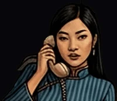

Maiden Call

« I'll come if you come. »
Siren's Oil Lure.
- STR5
- DEX7
- INT6
- WIS8
- CHA10
- CON6
- Formula
- I(t) = ∫₀ᵗ φ(s) · e^(λ(t−s)) ds
- Appearance
- Dark-haired, maybe Asian, old phone or glowing anchor in hands, curious, haunting, sweet.
- Faction
- Blue · White · Sender · Second-Wave Offspring · 🧜♀️ 🐳 📞 ⚓ — Innocence & Relationship · Authenticity & Warmth.
- Masks
- Black Bishop · Echo (Siren) · Mermaid · Marie · Aube's Sister.
- Profile
- Haunting binder — a sweet whisperer with anchor's grasp. High CHA and WIS lure with fragile grace.
- Powers
- Siren's Oil Lure, Call, Psychic Pull. Anchor's Crude Grasp — roots, oily grip. Her oil weaves haunting whispers — binding souls with fragile grace.
- Maskomatics
- The Lovers (VI) · Yesod · Mithraic Nymphus · Plotinus' oil whisper pipe signals · Kabbalah's Echo in Dalet might ring new lures.
- Hexagram
- ⚓ Hexagram 6 — Conflict (訟) · "Heaven and water move apart, Conflict, But with inner truth."
- Mini-stories
- Pit of Broken Calls.
- Krewsmatics
- Anchor + Arrow = Exploration.
Puck You!: Answers the rotary phone mid-rally and lets go of the paddle; while it rings, her call pulls your paddle toward the centre.
Puck You! : Décroche le téléphone en plein échange et lâche sa raquette ; tant qu’il sonne, son appel attire ta raquette vers le centre.
PUCK YOU!© Korhogo™ · Korhogo Fauna™ · Fauna Masks™ — any content, any form, any medium. Mauk Tenieb.